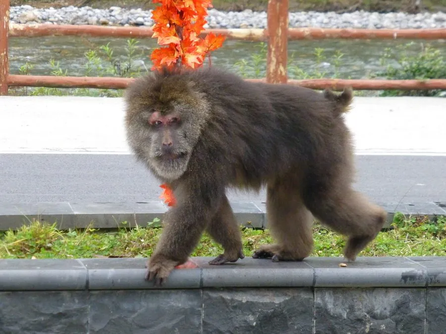

哺乳动物 · 动物界
藏酋猴 Macaca thibetana

中国特有的猕猴属灵长类，体型粗壮、尾极短，成年雄性体重可达 20 千克，栖息于华中至西南的山地森林，结群活动且等级分明。
- 分类
- 门脊索动物门纲哺乳纲目灵长目科猴科属猕猴属
- 栖息环境
- 亚热带山地常绿阔叶林、针阔混交林、石灰岩崖壁与沟谷
- 地理分布
- 中国四川、陕西、甘肃、湖北、湖南、安徽、浙江、福建、江西、贵州等地
- 保护级别
- IUCN 近危（NT）；中国国家二级保护动物
物种志
藏酋猴体型粗壮结实，四肢近乎等长，尾短于后足，成年雄性体长约 60–70 厘米、体重 15–20 千克，雌性明显较小。吻部突出，面部裸露呈肉红色，老年个体两颊与下颌长出灰白色长毛，宛如蓄须老者，故有“毛面猴”“胡子猴”之称。全身毛被厚密，背毛棕褐至灰褐色，腹面浅淡，皮肤在臀胝处增厚成淡红色坐垫。
它们栖息于亚热带山地常绿阔叶林、针阔混交林及悬崖峭壁附近，昼行性，善攀爬也常下地活动，以嫩叶、果实、种子、竹笋和昆虫为食。猴群常由数十只个体组成，雄性间存在严格的等级序列，争斗多以瞪视、张口和拍地威慑代替撕咬。每年秋季至初冬交配，孕期约 6 个月，每胎一仔，幼猴紧抓母猴腹毛随群迁移。四川峨眉山、安徽黄山等地的种群因长期接触游客而格外知名。
形态与习性
- 体长雄性约 60–70 cm，雌性约 50–60 cm，尾长不足 10 cm
- 体重雄性约 15–20 kg，雌性约 9–12 kg
- 食性以嫩叶、果实、种子、竹笋为主，兼食昆虫与鸟卵
- 繁殖秋季至初冬交配，孕期约 6 个月，每胎一仔
- 寿命野外约 20 年，饲养条件下可超过 25 年
- 社会结构数十只结群，雄性按等级排列，成年雄猴兼任护卫
- 活动节律昼行性，晨昏觅食，正午多在树冠或岩檐休息
趣味知识
- 老年藏酋猴两颊会长出灰白色长毛，看上去像留着络腮胡的老者。
- 峨眉山的猴群会守在山道旁向游客索食，是研究人猴关系的经典对象。
- 猴群遇到天敌时，成年雄猴会挡在外围，发出短促的警告声。